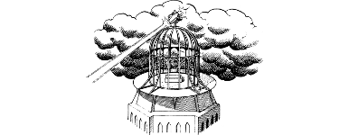

315
Beyond the door you can see the flagstoned approaches that lie within the main gate. Hammerland bandits draw pails of dirty grey water from a well by the south wall, and a patrol of sour-faced Drakkarim marches past them with their spears couched untidily on their shoulders.
You scan the streets of this city-fortress and note that there are no individual dwellings here. The buildings of Gazad Helkona are grouped into four vast hexagonal blockhouse complexes, each topped by a cluster of minarets and spires. They are connected to one another by bridges that span the wide avenues between. At the centre of the stronghold is a massive octagonal citadel. A broad ramp leads to its portcullised gate which is guarded by fifty armoured sentries. As you observe the citadel, you sense a powerful concentration of evil lurking somewhere within its jet-black walls. Its highest level is dominated by a domed observatory which emits a pulsating crimson light. Your Sixth Sense tells you that Lone Wolf is being held captive somewhere within this edifice, and it hardens your resolve to rescue him.
{kind=link}

You quickly determine that the citadel gate is too heavily defended for you to dare risk entering by such a direct route. Instead, you resolve to get into this stronghold by one of the bridges that connect it to the surrounding blockhouse complexes. The nearest blockhouse is 100 yards from the doorway, and you can see two possible ways to enter. There are a pair of iron doors at ground level, and a staircase which leads up to a balconied landing.
If you wish to investigate the double doors, turn to 162.
If you decide instead to try the staircase, turn to 308.